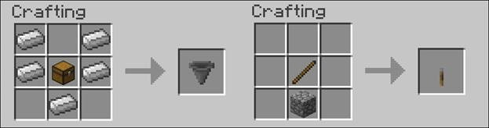
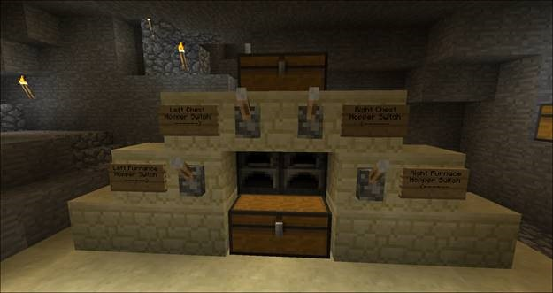
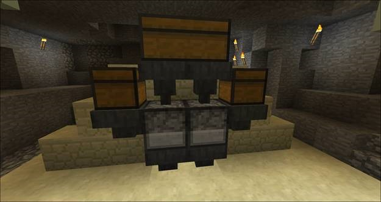

GETTING STARTED
Types of Elaborate Devices?
Automatic Furnace
Although the last example has the classic redstone-as-wire configuration, not all redstone creations are
necessarily wired-together type creations. One of my favorite redstone creations uses some redstone pieces
that are more mechanical-like than electrical-like: hoppers and levers.
Here’s how you craft a lever and hopper:

And here is the ingenious creation:

It’s an automatic furnace. This simple little device allows us to load up a chest with stuff-to-be-cooked
and it will automatically feed it into the furnaces and then into a storage chest.
Raw pork, iron ore, and the like, goes in the top, cooked pork and iron ingots pile up in the chest below. As long
as there is fuel, stuff to cook, and space in the storage chest at the bottom, it just keeps chugging along. The
levers turn the individual loading processes on and off. Let’s look at the back to get a better peek at how it works.

Hoppers are like funnels. Anything on top (either dropped in or fed by a chest) is moved to an available slot in the device the
hopper is connected to. The device above has hoppers to feed the food/ore from the top chest into the top of the furnaces, hoppers
to move fuel from the little baby chests on the side into the furnaces, and then hoppers for the furnaces to drop the cooked
food/ingots into, in order to feed them to the storage chest. This video teaches how to make a simple (no redstone) and complex (with redstone)
automatic furnaces.
It’s a simple and inexpensive design to build and shows how a little redstone tinkering can really speed up your workflow in
Survival Mode, so you can get back to more important tasks like building the most awesome tree fort ever!
Although we talk about redstone casually now, working with redstone can be really frustrating when you’re learning the ropes.
Rather than grind through a bad design and several revisions in Survival Mode, if a redstone bug bites you. It is strongly
recommend playing around in Creative Mode to test out your ideas.